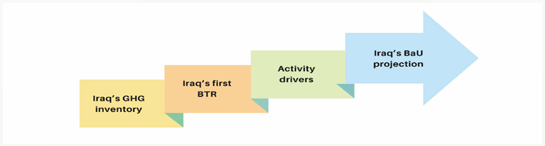
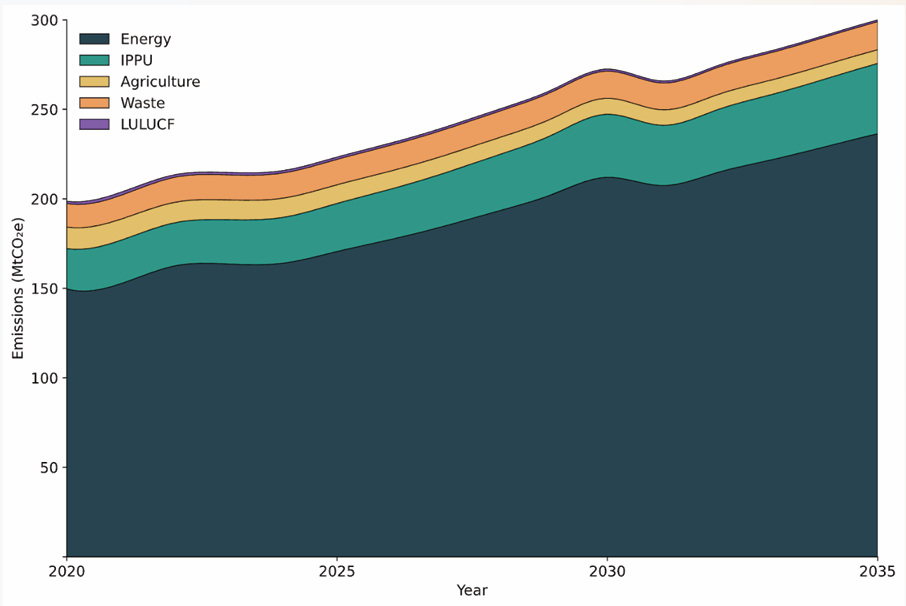

REPUBLIC OF IRAQ
(Updated in 2025)
Iraq Country Profile: Climate and Development1 |
|
|
Population (Ministry of Planning Nov. 2024) |
Estimated 46.118 million Population Growth 2.5% Population distribution 70.17% in urban areas 29.83% in rural areas |
Area |
435,052 km² |
|
GDP2 |
272,138,600,000 USD (6,296.1 per capita in 2024) Contributions to GDP by sector: Industry incl. Oil and Gas: 55.3% Services (public and private): 41.1% Agriculture: 3.3% |
|
Climate and weather |
Summers are hot and dry; with no cloud coverage for 4 months. Winters are cool. The monthly mean maximum temperatures for July range from 38°Cat Rutba to 43°C in Baghdad. The highest maxima are in June, July, and August ranging between 43°C and 50°C. The monthly mean minima for January range between 1°C in the southwestern desert and the northeastern foothills to 8°C in the central part of the river plain. The lowest minimum is about -14.5°C in the northern desert, -11°C in the foothills, and -8°C in the central part of the river plain. |
|
Energy Access (Tracking SDG 7) |
Urban 100% (electricity intermittent) |
Rural 100% (electricity intermittent) |
|
Water Access (2022) |
86.2% population connected (intermittent) %93.4 connected to wastewater services |
Deforestation (Global Forest Watch/ICAT, 2023) |
7 hectares/year. A 0.80% decrease in tree cover since 2000. |
|
Desertification |
39% of Iraq’s territory 55.5% of Iraq’s land area is prone to desertification. Degraded lands: 69.8% (2021) Soil salinization: 54% increase in agricultural lands. |
Important Bird and Biodiversity areas (IBAS) |
Iraq has 67 IBAS including 82 Key Biodiversity Areas (KBAs) |
|
Key Climate Risks (NDC 2021) |
Heat Waves |
Water stress & rise in waterborne parasitic diseases |
|
Floods & severe droughts |
|
Ecosystem stress |
|
Dust storms |
|
Abbreviation and Acronym
AI Artificial Intelligence
BaU Business as usual
BTR Biennial Transparency Report
BUR Biennial Update Report
CC Climate Change
CCHF Crimean-Congo Haemorrhagic Fever
CIP Climate Investment Plan
CMA Conference of the Parties serving as the meeting of the Parties to the Paris Agreement
CH₄ Methane
CO₂ Carbon dioxide
DSS Dust and Sandstorm
ESG Environmental, Social and Governance
FAO Food and Agriculture Organization
GCF Green Climate Fund
GDP Gross Domestic Product
GHG Greenhouse Gases
GIS Geographic Information Systems
GoI Government of Iraq
GW Gigawatt
ICT Information and Communication Technology
IFRC International Federation of Red Cross and Red Crescent Societies
IPCC Intergovernmental Panel on Climate Change
IPPU Industrial Processes and Product Use
KPI Key Performance Indicator
KRG Kurdistan Regional Government
KRI Kurdistan Region of Iraq
LAMA Locally Appropriate Mitigation Action
LAP Local Adaptation Plan
LDAR Leak Detection and Repair
LT-LES Long-Term Low-Emissions Strategy
LPG Liquefied Petroleum Gas
LULUCF Land Use, Land-Use Change and Forestry
MJ Megajoule
MOI Means of Implementation
MoEnv Ministry of Environment
MRV Measurement, Reporting, and Verification
MSW Municipal Solid Waste
NAP National Adaptation Plan
NAMA Nationally Appropriate Mitigation Action
NC National Communication
NDC Nationally Determined Contribution
NDP National Development Plan
ND-GAIN Notre Dame Global Adaptation Initiative
NOx Nitrogen oxides
N₂O Nitrous oxide
PA Paris Agreement
PM Particulate Matter (also called particle pollution)
PPP Public–Private Partnership
PV Photovoltaic (Solar)
RCP2.6 Representative Concentration Pathway 2.6
RCP8.5 Representative Concentration Pathway 8.5
SDGs Sustainable Development Goals
SLCPs Short-Lived Climate Pollutants
SMEs Small and Medium-sized Enterprises
SSP5-8.5 Shared Socioeconomic Pathway 5–8.5
TNA Technology Needs Assessment
UNCT United Nations Country Team
UNDP United Nations Development Programme
UNEP United Nations Environment Programme
UNFCCC United Nations Framework Convention on Climate Change
USD United States Dollar
WFP World Food Programme
1. IRAQ MOTIVATION TOWARDS NDC DEVELOPMENT & IMPLEMENTATION
Motivation
Iraq’s motivation for developing its Nationally Determined Contributions (NDC) stems primarily from the Iraqi Constitution, Article 33, paragraph 1, states: “Every individual has the right to live in healthy environmental conditions”. Paragraph 2 states: “The State shall guarantee the protection and preservation of the environment and biodiversity”. Hence its commitment in ensuring high-quality living conditions for its citizens This is further reinforced by Iraq’s dedication to climate action for human security as projects that have accelerated both climate security, climate adaptation and SDG alignment in the country, recognized as a core pillar of national governance. An additional driver is Iraq’s status as a signatory to various international agreements and initiatives, which underscores its responsibility to contribute meaningfully to various global actions and initiatives. This includes, among others, Sustainable Development Goals (SDGs), Just Transition Framework3, Biodiversity Conventions, UNFCCC and the Paris Agreement (PA) among others. Hence Iraq is committed to diversifying its current economy (being oil dependent) and establishing a foundation for a sustainable, resilient, low-emission, and environmentally friendly future. This transformative vision places climate-friendly growth at the heart of Iraq’s pathway to inclusive economic progress, social justice, and environmentally sustainable development.
Recognising the urgency and global scale of the climate challenge, Iraq became a Party to the UNFCCC in 2009 and signed the PA in 2016, and law No. 31 of 2020 was issued for the accession of the Republic of Iraq to the Paris Agreement. Since then, it has taken substantial steps to honour its international commitments, including the submission of its first NDC in 2021, completion of a Technology Needs Assessment (TNA) in 2024, and development of a Nationally Appropriate Mitigation Action (NAMA) in 2024. In the same year, Iraq launched its first Biannual Update Report (BUR) and Biannual Transparency Report (BTR) and prepared both its First and Second National Communications (2016 and 2024). Iraq has also advanced subnational climate action through the development of a Locally Appropriate Mitigation Action (LAMA) and a Local Adaptation Plan (LAP) for numbered governorates. Additional achievements include the development of the Climate Vulnerability Index (CVI), Climate Investment Plan (CIP), and Country Programme for the Green Climate Fund (GCF) in 2025, alongside the National Environmental Strategy in 2024. Furthermore, Iraq has undertaken extensive studies on its Energy Transition Framework and Energy Transition Assessment in 2025 and outlined a Green Growth Framework in 2025.
Iraq’s climate attention stems not only from its ethical and moral responsibilities as a member of the international community but also from its significant hardships due to climate change impacts. The NDC development is classifying the main sectors and recommended sub-sectors and their contributions to climate change mitigation and adaptation, which are closely linked to national environmental/climate priorities in Iraq vision 2030, National development plan 2024-2028, National Strategy for the Protection and Improvement of the Environment (NES) 2024-2030 and Strategic Plan for Water and Land Resources (SWLRI) in Iraq 2015-2035.
Iraq’s Nationally Determined Contributions (NDCs) are not only a climate commitment, but a cornerstone of its National Development Plan (2024–2028). Without robust integration of climate risk assessments, the country will face significant costs from immediate climate security risks and long-term threats to national security. As a signatory to global agreements, Iraq has both the responsibility and the opportunity to align its climate vision with its development priorities.
On the other hand, Iraq is making concerted efforts to unlock significant opportunities for strengthened climate governance, including cultivating economic and financial benefits such as investment in low-carbon energy/industry infrastructure, energy efficiency technologies, and renewable energy sources. Further, Iraq considers that regional water security which is a major interest for Iraq is highly related to climate-responsive water management approaches. An additional opportunity lies in mainstreaming climate change across public sector planning and financing, while ensuring that vulnerable communities, youth, women, persons with disabilities, the private sector, labour unions, civil society organisations, and citizens are meaningfully engaged in climate discourse. By fostering awareness, promoting active participation, and strengthening community ownership, Iraq enhances civic allegiance and national cohesion. This NDC is therefore crafted with an inclusive vision—to contribute to the global effort to fulfil the PA while simultaneously advancing Iraq’s national development goals.
Iraq’s Climate Trajectory and Emissions Outlook
Iraq’s climate agenda is intrinsically linked with its broader national development priorities. To guide sectoral selection in this document, Table 1 presents an analysis of major climate-relevant sectors against five themes: the SDGs, biodiversity, just transition, economic growth, and food security. This framework provides a lens to identify synergies, address gaps, and define strategic priorities.
Energy: Iraq’s oil dominance continues to overshadow its renewable energy potential and grid modernisation needs.
Industry: Industrial development presents opportunities to stimulate economic growth, reduce unemployment, and enhance resource efficiency.
Water: The Tigris–Euphrates-Shatt al-Arab basin remains central to agriculture and biodiversity, while groundwater and mountain runoff in the Kurdistan Region are critical resources; metrics must prioritize hydrological balance.
Agriculture: Challenges include water scarcity, declining soil fertility, desertification, land degradation, limited technological application, and unplanned land use.
Special Ecosystems and Forestry: Reforestation remains minimal; expanding carbon offset programs and conserving native species could significantly improve ecological metrics.
Table 1: Sectoral Analysis Matrix: Iraq vs. Sustainability Theme
|
Sector |
SDGs Alignment |
Biodiversity Impact |
Just Transition |
Economic Growth |
Food Security Implications |
|
Energy |
SDG 7 (Affordable Clean Energy), SDG 13 (Climate Action) |
High GHG emissions affect ecosystems; |
Shift from fossil fuels needs workforce reskilling, inclusive policies |
Increasing the provision of renewable energy can reduce domestic oil consumption thus maximizing revenues through its use in petrochemical industries. |
Indirect—energy access supports water, agriculture |
|
IPPU |
SDG 9 (Industry & Infrastructure), SDG 12 (Responsible Consumption & Production) |
Industrial emissions can degrade habitats |
Requires cleaner tech and regulation reform |
Strong industrial base: modernisation could unlock competitive advantage |
Minimal direct impact |
|
Water |
SDG 6 (Clean Water & Sanitation), SDG 15 (Life on Land) |
Crucial for wetland and water-based biodiversity |
Water equity across regions and communities |
Essential for agriculture and industry; |
Core to irrigation, sanitation, and crop viability |
|
Agriculture |
SDG 2 (Zero Hunger), SDG 15 (Life on Land), SDG 13 (Climate Action) SDG 12 (Sustainable Consumption), |
Agriculture expansion risks habitat loss: Overgrazing and methane emissions affect ecosystems. |
Support for smallholders, green techniques smart farming can enhance, resilience to climate shocks |
High local value; potential to expand sustainable exports |
Direct pillar of national food production |
|
Sp. Ecosystem (forest, mountains, marshland) |
SDG 15 (Life on Land), SDG 13 (Climate Action), SDG 8 (Decent Work & Growth) |
Supports biodiversity, and species conservation |
Protecting eco system dependent communities; ensure reskilling for labour force as green employment |
Moderate utilization of —ecosystem services such as timber, honey etc can offer green jobs. Forests can support carbon sequestration as economicactivity. Linked to Eco tourism |
Eco system health affects rain cycles and support agricultural systems including for livestock. Ecosystems provide food items (forest products, aquatic species etc that support food security |
National context
Geography, Climate, and Socioeconomic Dynamics
The Republic of Iraq is a federal parliamentary republic, comprising 19 governorates. Iraq lies at the heart of the Middle East, bordered by Turkey, Iran, Kuwait, Saudi Arabia, Jordan, and Syria, with a short coastline on the Arabian Gulf. Its landscape is defined by four main zones: the alluvial plains of Mesopotamia between the Tigris and Euphrates rivers; the northern and northeastern highlands, including the rugged Zagros Mountains of the Kurdistan Region with peaks over 3,600 meters and rich water resources; the western and southwestern deserts, part of the Syrian and Arabian plateaus; and the southern marshlands, a unique wetland ecosystem of global importance. In general Iraq’s geography is characterized by contrasts—with river basins, marshes, and fertile lands alongside deserts and barren mountains, shaping its climate, livelihoods, and development challenges.
Climate and Ecology Challenges
Iraq experiences a semi-arid to arid continental climate shaped by Mediterranean influences, leading to stark temperature differences and minimal rainfall. The country’s climate zones range from: Mediterranean climate in the northern mountains — snowy winters (400–1000 mm precipitation) and mild summers. Steppe climate in transitional regions — moderate rainfall (200–400 mm) and Hot desert climate across the western plateau and alluvial plains — extreme temperatures (up to 50°C) and scarce rainfall (50– 200 mm). Iraq suffers from various climate impacts such as increased frequency and severity of extreme weather events such as heatwaves, rising temperatures, prolonged droughts, lower snow fall and warmer winter, declining water availability, reduced agricultural productivity and accelerated desertification. These challenges pose serious risks to food security, public health, infrastructure, reduced access to essential goods and overall economic welfare. As such, they fuel unplanned population displacement, triggering violence with the subsequent threats to culture, cultural heritage, and livelihood pattern. This situation highly compromises the quality of life and development prospects.
Population and demography
Iraq’s population reached 46,118,793 with an annual growth rate of 2.5%. Nearly 70.17% of the population is concentrated in urban areas and 29.83% in rural areas, according to the 2024 population census. This high growth rate and urbanisation trend necessitates adopting climate friendly management approaches4 in cities such as adequate urban planning, sustainable energy, green mobility, and resilient housing. Furthermore, it puts additional pressure on the already strained resources, resulting in a shortfall of services and employment opportunities. The socio-economic survey for families 2023-2024 records unemployment rate of 13.5% with around 17.5% of citizens are under poverty. As result of internal and climatic factors (high temperature, sandstorms, water scarcity and persistent drought) immigration and successive human displacement had taken place thus exacerbating vulnerability among local communities especially in southern Iraq with 75,983 displaced people during 2024.
Economy and Livelihoods
Despite Iraq being classified as a high-middle-income country (GDP per Capita is $6,296.1 USD in 2024)5 its economic development remains constrained by an overwhelming dependence on oil exports6. This situation exposes Iraq to significant macroeconomic volatility, primarily driven by fluctuations in international oil prices and results in limited budgetary flexibility which complicates long-term development planning. Despite Iraq’s high GDP and growth and 0.695 Human Development Index in 2023. This disparity is further exacerbated by accelerating climate impacts, which intensify the negative effects on vulnerable communities and hinder the trickling down of economic benefits to the grassroots level.
Climate Security
Iraq faces an increasing complex array of climate and environmental risks from heat waves, extreme temperatures, and water scarcity to widespread pollution and biodiversity loss. The Mesopotamian Marshes, one of the world’s most important wetlands, threatened by climate change, upstream water diversions, and unsustainable land use. Iraq’s climate challenges which are heavily compounded by shared rivers (Tigris, Eu- phrates), upstream damming (Turkey, Iran), and obstacles facing the development of the water management.
The combined effects of climate change on the environment, which impact security, contribute to local unrest and tensions, and exacerbate fragility and local conflict. Since 1967, Iraq has faced no less than 90 conflicts related to water according to the Pacific Institute. A multidimensional set of risks exists at the intersection of the environment, climate change, and human security. The interaction of these risks will exacerbate the situation, perpetuate existing inequalities, and increase the deprivation facing the vul- nerability of Iraqis in general.
The transboundary of Iraq’s main water resources has also led to conflicts and diplomatic tensions with neighbouring countries. This requires the adoption of climate-friendly measures that improve basic services and sustainable livelihoods and contribute to supporting national efforts to achieve security and stability. Therefore, Iraq aims to enhance the resilience of its people through comprehensive approaches that address conflict and security risks caused by climate change by increasing the resilience of the water resources sector, enhancing food and environmental security, the resilience of the agricultural sector, effective monitoring and early warning systems, accelerating the transition to clean energy, and strengthening institutional capacities, measurement, reporting, and verification, among other things.
Overview
This NDC covers the entire geographical borders of Iraq. The target of the NDC is set as fixed year target (2035). It includes GHG emissions by sourc-es and removals by sinks, not controlled by Montreal Protocol. GHG emis-sion had been estimated using the 2006 IPCC Guidelines and only account-ing three gases: Carbon dioxide (CO2), Methane (CH4), and Nitrous Oxide (N2O). Iraq national contributions are classified into 3 main categories, namely:
Mitigation contributions
Energy,
Industrial processes and product use,
Other (agriculture, forestry, waste).
Adaptation contributions
Water,
Agriculture,
Special Eco System,
Health.
Loss and damage
Migration and displacement,
Nutrition and Health,
Natural Habitat, Biodiversity and Cultural Heritage,
Security and Social Cohesion.
Each contribution area is further discussed as below.
Mitigation
This section covers emission associated with major sectors marked with both climatic and economical importance.
Energy:
Oil & Gas Sector: in 2022, Iraq’s oil sector produced an average of approximately 4.612 million barrels per day, with 81% of this production allocated for export, 15% for refineries, and 4% for power stations. In the gas sector7, the production rate reached 3,104 million standard cubic feet per day, of which, 33% was burned, 67% was invested. 41% was dry gas. In 2025 the percentage of the invested (utilized) gas increased to 74% and the burned decreased to 26%.
Power /Electricity: Iraq’s electricity production reached 18,856 MW in 2024, compared to 15,483 MW in 2022 and 12,086 MW in 2018. Per capita consumption increased from 2,742 kWh in 2018 to 3,347 kWh in 2022 and 3,591 kWh in 20248. Rising temperatures and water scarcity led to a decrease in hydroelectric power generation capacity from 1,846 MW to 300 MW. Over 98% of electricity is generated using fossil fuels (oil and gas), which account for 45% of total oil and gas consumption.
Renewable energy accounts for 1.2% of total generation, with hydropower contributing 0.9% and other sources (solar) only 0.3%, primarily serving the end-user sectors of homes and public services. The main challenge is the low efficiency of the grid, currently around 50%.
Building: Considerable number of citizens depend on local generators to provide their energy needs. As a result of increasing temperature, instability of public electricity supply, and frequent power outages, the emission from this sector is showing continuous growth.
Transportation: The transport sector accounts for approximately 25% of Iraq’s total final energy consumption with gasoline and diesel dominate transport energy use. The sector is dominated by private cars. Railway share accounts for about less than 5%. Iraq relies heavily on refined petroleum, much of which is imported due to limited domestic refining capacity. The Iraqi government has exempted imported electric and hybrid vehicles from customs duties as a contribution to mitigation and promoting environmentally friendly vehicles. The percentage of electric and hybrid vehicles in Iraq is currently 3% and is steadily increasing.
IPPU
This sector consumes about 20% of Iraq’s energy. Mineral industry (cement and lime productions), chemical industry (ammonia productions), and metal industry (steel production) constitute around ~7–8% of GDP in 2023, with potential to rise to 12–15% by 2030. Each 1% increase in industrial investment reduces unemployment by ~0.5% (170,000) workers. Cement Production is 7.5 million tons/year (with rehabilitation underway for key plants), and steel production capacity ~3 million tons/year9. Ammonia production capacity ~2,300 metric tons/day (Basra plant under development). The main challenge facing the sector is the outdated infrastructure which results in higher energy consumption
Other sectors
This includes methane emission from unmanaged waste including Municipal Solid Waste and Wastewater, Methane emissions from rice production, enteric fermentation, and manure management. Further forest depletion and Marshlands drying contributes to emission through reemitting stored emissions and reduction of sequestration potential. The climatic induced water scarcity is seen as a key factor in the management of those sectors.
Gases included
For preparing this document, CH4, CO2 and NOx were included, short lived climate pollutants like black carbon, ozone and hydrofluorocarbons, were not included in calculation.
Setting the Business-as-usual scenario
The Business-as-usual (BaU) scenario represents a quantified projection of national GHG emissions if no new mitigation policies or measures are adopted beyond those that are already implemented. As shown in Figure 1, it is derived scientifically based on Iraq’s recent GHG inventory for years 2020 and 2021, the information available in Iraq’s first Biennial Transparency Report (BTR), and wider activity drivers such as GDP and population forecast.

Figure 1: Data and sources used to set Iraq’s BaU emissions projection.
Iraq’s GHG inventory covers CO2, CH4 and N2O gasses with total emissions (excluding LULUCF) of 203.6 MtCO2e in 2021. The GHG inventory follows 2006 guidelines established by the Intergovernmental Panel on Climate Change (IPCC) to ensure accuracy, consistency, transparency, and completeness. The available data in the GHG inventory for 2020 and 2021 were used as the base for BaU projection till 2035. Then, the data and information available in Iraq’s first BTR such as sectoral mitigation pathways and emissions drivers were considered to maintain consistency with the BTR. Finally, emissions’ activity drivers such as GDP and population forecast based on different sources (Iraqi authorities, International Monetary Fund, global integrated assessment models, World Bank, and UN organisations) and other sectoral-specific drivers such as expected peak electricity demand were considered to validate the assumptions used for Iraq’s BaU projections.
Figure 2 shows that Iraq’s total BaU emissions starts from around 198 MtCO2e (including LULUCF) in 2020 and is projected to reach around 300 MtCO2e by 2035. It is dominated by energy sector emissions (78% of total emissions by 2035) which includes Power, Industrial fuel use, Oil & Gas, Transport, and Buildings amongst others. Increased energy and resource efficiency rates of up to 1% per year were assumed across sectors in the BaU scenario to ensure conservative BaU projection. However, population, GDP growth and economic development amongst other emission drivers can lead to high demand for energy, increased consumption of resources and waste generation. For instance, Iraqi population and GDP per capita are expected to reach 57 million and 7145 USD in 2035 compared to around 45 million and 5668 USD in 2025 respectively.

Figure 2: Business as usual emissions projection for Iraq between 2020-2035.
Mitigation targets and pathways
In line with first BTR, Iraq has made significant progress to achieve its unconditional mitigation target in its first NDC by eliminating gas flaring, increasing resource and energy efficiency across sectors, transitioning from high-carbon fuels to natural gas, and expanding its use of renewable energy sources.
In view of the decisions of the Paris Agreement and the Framework Convention, namely:
CMA 3 Decision 1/CMA 3 Action Programme to Strengthen and Implement Mitigation Ambition;
CMA 4 Action Programme to Strengthen and Implement Mitigation Ambition as expediated;
Sharm El-Sheikh Implementation Plan, Decision 1/CMA.4, which emphasizes mitigation actions, calls for technology deployment, and advocates for the transition to low-emission energy systems;
1/CMA.5 Conclusion of the first global review, which stressed that the targets to date are insufficient to put emissions on a path consistent with the Paris Agreement objective;
Other decisions, particularly those calling for a review and strengthening of the 2030 targets and for increased mitigation ambition and implementation in a manner that respects the specific circumstances of each country.
In this NDC, Iraq based on its national circumstances, aims to increase its mitigation targets in line with PA principles as shown in Figure 3 by:
Increasing its previous mitigation target in the first NDC to be 3% from the BaU emissions by 2030 instead of 1-2%.
Setting a new unconditional mitigation target of up to 5% from the BaU emissions by 2035 (subject to update in 2030 in line with national circumstances).
Setting a new conditional mitigation target of up to 17% from the BaU emissions by2035.
Figure 3: Emission mitigation ambitions for Iraq.
In this NDC, Iraq’s total mitigation ambition is raised to a total of 22% (conditional + unconditional) of the BaU emissions by 2035. To achieve these mitigation targets, Table 2 sets the overarching mitigation pathways that the Iraqi government is prioritising over the next 5-10 years.
Table 2: Mitigation pathways for Iraq.
Mitigation pathway |
Description |
1 |
Reducing electricity transmission and distribution losses gradually to reach up to 10% only by 2050 and improving power generation efficiency. |
|
2 |
Using natural gas instead of heavy fuel oil and diesel in power plants which increases power generation efficiency as well as converting single-cycle to combined-cycle power plants (around 9 GW capacity by 2030). |
|
3 |
Capturing and utilisation of associated gas, with a goal reaching zero flar-ing by 2030 at latest. This approach not only reduces emissions but also in-creases the availability of natural gas use to Power and Industrial sectors. |
|
4 |
Deploying renewable energy sources such as solar PV and wind as part of Iraq’s electricity mix (8.5% of generation mix by 2030) as well as in the build-ing sector (via local solar PV installations and demand-side management). |
NDC costs and mitigation options
Empirical evidence shows that mitigation technologies become costlier in developing economies such as Iraq because capital charges, not hardware, dominate project economics. In Iraq, financing costs and project risk are high, often making up, for instance, more than half of a solar levelized cost of electricity. International lenders layer on further mark-ups because Iraq carries a ‘B-’ sovereign rating, and its oil-rentier fiscal model ties off-taker creditworthiness to volatile crude revenues.
To reflect these cost premiums for Iraq, carbon prices that reflect global transition to net zero used in the Global Change Assessment Model (GCAM)10 were considered to reflect the implementation of mitigation options and technologies to achieve Iraqi NDC targets and ensure fair and transparent costs. GCAM is a least-cost optimization model that finds the least-cost low-carbon pathway by implementing suitable mitigation options across all economic sectors subject to constraints and assumptions. As such, the NDC costs for the enhanced unconditional mitigation target in 2030 and the new uncondi-tional and conditional mitigation targets in 2035 were obtained and shown in Table 3.
Table 3: Cost of NDC targets for Iraq.
NDC target |
Cost ($ USD billion-2025) |
Enhanced unconditional 2030 (3% of BaU) |
1.71 |
Unconditional 2035 (5% of BaU) |
6.19 |
Conditional 2035 (17% of BaU) |
21.03 |
In order to achieve Iraq’s mitigation targets (both conditional and unconditional), Table 4 provides an overview of the indicative mitigation options across sectors10. Iraqi government will assign the mitigation options as conditional or unconditional on a project-by-project basis depending on specific project costs and government strategies in line with achieving NDC targets.
Table 4: Indicative list of sectoral mitigation options to achieve NDC targets (conditional and unconditional.
Sector |
Mitigation options |
|
Power |
|
|
Industry |
|
|
Oil and Gas |
|
|
Transport |
|
|
Building |
|
|
Waste |
|
Nature-based solutions |
|
Article 6 Paris Agreement Mechanisms
Iraq recognizes that achieving its NDC targets requires active participation in the international cooperation mechanisms under Article 6 of the Paris Agreement. Therefore, Iraq intends to utilize cooperative approaches (Article 6.2) and the mechanism established under Article 6.4 to mobilize finance and technical expertise and implement mitigation and adaptation activities.
Iraq has begun developing a comprehensive strategic approach and preparing an operational manual for Article 6, ensuring the highest levels of environmental integrity and transparency and preventing double counting. Furthermore, Iraq recognizes the importance of non-market approaches (Article 6.8) to support mitigation and adaptation priorities, particularly in the areas of water resources management, agriculture, and combating desertification.
Priority Sectors for SLCP Mitigation
The Government has identified the sectors in Table 5 as priorities for Short-lived Climate
Pollutant (SLCP) mitigation in this NDC.
Table 5 Sectoral priorities for SLCP
Sector |
Primary SLCPs/ pollutants |
Priority actions (short) |
|
Oil and Gas |
Methane |
Reduce routine flaring; strengthen methane monitoring; deploy (LDAR) programs; close non-compliant facilities. |
|
Electricity |
Black carbon, PM, NOx |
Modernize plants; switch liquid fuels → natural gas & renewables; improve grid efficiency; scale solar mini-grids. |
|
Waste Management |
Methane (landfills); PM from open burning |
Capture landfill methane; establish sanitary landfills; scale composting for organic waste (>60%); prepare ban on open burning. |
|
Industry |
Black carbon, PM |
Switch to cleaner fuels (natural gas, LPG, RDF); upgrade kilns; install air filtration; phase out heavy fuel oil. |
Agriculture and Water Resources |
Methane (livestock, rice); indirect SLCPs from diesel pumps |
Promote improved livestock feeding; deploy biogas digesters; climate-smart agriculture (drip irriga- tion, drought-resistant crops, organic fertilizers). |
|
Transport |
Black carbon, PM |
Modernise vehicle fleet; raise fuel standards; expand public transport; incentivise private sector cleaner solutions. |
Additionally, to ensure measurable progress, Iraq will develop sector-specific SLCP action plans with clear mitigation targets, timelines, and performance indicators as shown in Table 6.
Table 6 Sector-specific SLCP action plan for Iraq
Sector/ Topic |
Key pollutant/issue |
Priority actions (short) |
Target/ timeline |
Notes |
|
Oil & Gas |
Methane from routine flaring |
Regulatory roadmap to phase out routine flaring; enforce via licensing & monitoring |
Phase-out by 2030 |
Enforcement through licensing conditions and continuous monitoring systems |
|
Brick & Asphalt |
Black carbon; PM |
Mandatory fuel-switching in brick & asphalt; provide financial incentives |
Implement by 2027 |
Incentives to offset transition costs for producers |
|
Waste |
Methane; PM |
Implement landfill methane capture pilots; Sanitary landfill; Fertilizing |
5 pilot sites by 2028; scale thereafter |
Pilot evaluation will determine national rollout plan |
|
Transport |
Black carbon; PM |
Phased vehicle import restrictions on diesel; electrify public fleets |
Starting 2026 |
Coordination with customs, local authorities & private sector required |
|
MRV |
Emissions tracking |
Build digital SLCP platform for emissions with public access |
Platform live by 2027 |
Integrates MRV, supports policy transparency and donor/project monitoring |
Adaptation
Adaptation contributions identified in this document are set in accordance with article 7 of PA, which involves sequence adaptation stages as reducing vulnerability, enhancing resilience, and improving adaptive capacity. A major factor impacting the adaptation process in Iraq is the acute v ulnerability status, which need to address the accelerating climate impacts amid complex humanitarian and life-sustaining challenges including displacement. The climaterelated risks have also impacted the related cultural heritage (cultural practices, heritage sites, traditional knowledge, Indigenous Peoples’ knowledge and local knowledge systems).
Vulnerability Assessment
According to the ND-GAIN Index, Iraq ranks 120th globally, with a vulnerability score of 0.436 and a readiness score of just 0.286. This places Iraq in the upper-left quadrant of the matrix, indicating high vulnerability and low readiness. Further, 42% of the population in Iraq is vulnerable to the impacts of climate change. Table 7 provides overview of selected vulnerability factors.11, 12, 13, 14.
Table 7: Major climatic hazard induced vulnerability factors
Elevated heat peaks |
Increase in temperature by +0.48°C per decade (2000–2023), an increase of mean annual temperature of 2°C by 2050, increase in the occurrence of extreme temperatures above 50°C by 2100. In southern Iraq, such extremes will last up to 21 consecutive days. Maximum daily temperatures could reach 56 °C under SSP5-8.5 (high emission scenario). Up to 80% of summer days have temperatures greater than 45 °C (across all SSP scenarios). An extra 20 days with heat index1<5/sup> 16 Fahrenheit which is over 35°C are observed already compared to historical records. The winter days especially in northern Iraq are also showing higher temperatures above average mean temperature is expected to increase by 1 to 5 ℃, with minimum temperature is expected to increase up to 5.5 ℃. |
Sand and Dust Storm (SDS) |
As a result of a decrease in the annual rate of rainfall, drying of the marshes, land degradation, and desertification, there is a trend of increasing frequency and in-tensity of SDS. National reports recorded an increase from 100/y in 2024 to es-timated 300/y in 2030. SDS induces various health problems and human dis-comfort, including mental and psychological disturbances. Further, it impacts transportation efficiency and could reduce solar PV efficiency by up to 60 %. |
Recurring droughts |
Trend of declining rainfall, especially in northern Iraq. (-9% average annual by 2050)16. Further river Inflows are projected 30% decrease under RCP 8.5, Less wa-ter runoff-20)% country average). An academic study17 reported that the fre-quency of severe and extreme events, mainly draught, measured as SV-EX18 was 3.1% in (1950/1951) of the total area of Iraq; it increased to (80.4%) in 2021/2022. Further, between 2000’s & 2010’s the rainfall decrease rate ranged between 46.4%-84.6%. Further induced impacts are low water quality due to higher salini-ty and lower ability to absorb pollution. Low rainfall is also contrib-uting to food insecurity and health displacement. |
Floods |
Flooding has become less frequent in recent years19, with hotspots located along the southern stretch of the Tigris–Euphrates River system. Flooding is often caused not only by heavy rain but also by the greatly reduced capacity of soil to absorb precipitation as a result of land degradation. Heavy rains and flooding also consti-tute a health risk, since they can aggravate the spread of water-borne diseases. |
Sectors coverage
The sectors discussed in this section are those identified as having a direct and major impact on Iraq’s vulnerability to climate change including water, agriculture, special ecosystems/other land use, and health. Additional vulnerabilities have also been recognised, such as heat stress, which is closely linked to other areas, including the urban and infrastructure sectors, as well as electricity provision.
Given their nature as emitting sectors, with exception to water, the focus of this NDC is two-fold: to ensure the adequate provision of essential services, while at the same time advancing measures to mitigate their emissions, as further elaborated in the mitigation section of this document.
Water
In semi-arid and arid countries like Iraq, the water sector is the foundation for tackling climate vulnerabilities. Iraq’s water resources—comprising riverine flows, rainfall, and groundwater—are shaped by geography, climate, and upstream infrastructure, with major dams and irrigation projects in neighbouring countries adding transboundary pressures. Climate-related water scarcity is intensifying and leading to deteriorated quality.
SWLRI projected a 10.9 BCM annual supply–demand gap by 2035. Under IPCC AR6 mid-range scenarios (SSP2–4.5), Iraq’s water stress indicator already exceeds 80%, with eight drought years recorded since 2000, averaging just 30 BCM/year—equivalent to one severe drought every three years20.
At the same time, Iraq faces flood risks, as seen in 2019. Urban exposure to riverine flooding is projected to fluctuate between 0.05% and 0.80% (2000–2050), affecting resources, infrastructure, and health.
Water quality is another challenge. The wastewater treatment system still requires development and more effective measures to reduce river pollution, disease outbreaks, and ecosystem degradation. Currently, 93.4% of Iraqi households have access to safely managed sanitation services. However, only 66.9% of wastewater generated in 2023 was treated, with low reuse rates, creating a critical sanitation gap that impacts resil- ience to climate change.
Suggested adaptation actions.
The anticipated actions in the water sector are guided by the overarching goal of reducing Iraq’s current water deficit. These actions focus on establishing a water allocation threshold (water budget), developing additional water resources, and enhancing efficiency in water use and management. The total estimated cost of implementing these measures is USD 11.8 billion.
Agriculture
The agriculture sector encompasses both cropping and rangeland activities. These sub-sectors are highly interconnected and interdependent21, requiring a comprehensive management framework to ensure effective adaptation to climate change.
Agriculture contributes approximately 3.3% to Iraq’s GDP (2024) and provides employment to about 13.8 million people. Around 30% of Iraq’s population resides in rural areas and depends, directly or indirectly, on agriculture for their livelihoods. The sector is also of particular significance for women, employing 23% of the female workforce in Iraq22.
Numerous studies highlight the severe impacts of climate change on agriculture, including rising temperatures, declining rainfall, increased frequency of dust and sandstorms (DSS), as well as the compounded effects of aridity and desertification. According to the Climate Investment Plan, crop yields have already declined by around 17%. Desertification is advancing at a rate of 7 hectares per year, while soil salinization has increased to affect 54% of agricultural lands.
Further, studies23 indicate a 42% reduction in arable land between 2017 and 2020, alongside a 1.7% increase in desert land and a 0.53% increase in degraded land.
Anticipated contribution
Iraq achieves self-sufficiency in wheat only during rainy seasons. To address these climatic impacts, Iraq is developing an integrated agricultural management program that includes climate-smart farming techniques, programs to develop varieties resistant to high temperatures, drought, and salinity, improved soil management, modern irrigation systems, and improved livestock management practices. The estimated cost of imple-menting these measures is US$8.35 billion.
Unique ecosystems
Marshes
Iraq’s marshes, a UNESCO-recognized natural heritage site, lie in the southern Mes-opotamian basin within the Tigris–Euphrates floodplains. Once covering over 20,000 km², they were the largest wetland ecosystem in Western Eurasia. This unique aquatic landscape sustains ancient cultural traditions, supports local livelihoods, and provides habitat for diverse wildlife, including endemic and endangered species.
The marshes deliver critical ecosystem services in sustaining rural communities and reducing migration pressures, mitigating flood hazards from storm surges, supporting local economies through dairy, fish, reeds, and other products, and contributing to groundwa-ter recharge and natural water purification. The marshes serves as carbon sink, double than of the forest, as a mitigation co-benefit, while the dryness of the marshes releases the carbon that was stored for centuries.
However, the marshes face severe climate-related threats in addition to the Water pol-icies of neighbouring countries—including biodiversity loss, declining plant cover, soil fertility deterioration, salinity, and pollution. These pressures drive habitat loss, invasive species spread, ecosystem disruption, and displacement of local populations, with long-term risks of genetic erosion, species extinction, and ecosystem collapse.
To ensure regeneration24, studies recommend allocating a minimum of 5.305 BCM of freshwater annually, delivered at the right time, frequency, and quality to sustain ecological and cultural functions, and carbon storage.
Forest
Iraq’s forests are primarily concentrated in the northeastern Zagros Mountains in Kurdistan region of Iraq, where oak woodlands (e.g., Quercus brantii, Q. infectoria) form the backbone of the ecosystem. These forests regulate microclimates, support biodiversity, and provide firewood and grazing resources for local communities. In the lowlands, riverine forests of willows (Salix spp.), poplars (Populus euphratica), and tamarisks form thickets along the Tigris and Euphrates, though increasingly fragmented by urban expansion and agricultural encroachment25.
Forest cover is now below 2% and declining. According to the CIP, Iraq has lost 0.8% of tree cover since 2000, while 60% of its land is at risk and approximately 100,000 hectares are desertified annually. In a landscape already strained by desertification, deforestation, and fluctuating weather extremes, preserving and expanding forests—including riparian woodlands and mountain groves—offers vital co-benefits: stabilizing soils, conserving biodiversity, and acting as carbon sinks.
Integrating forestry into cross-sectoral policies—linking land use, water, and biodiversity—is therefore critical. Yet the sector faces significant challenges:
Extreme temperatures exceeding 50°C and declining rainfall, stressing tree survival and limiting expansion.
Frequent wildfires often linked to climatic factors.
Soil degradation, where drying soils accelerate erosion, reduce fertility, and hinder natural regeneration, thereby intensifying desertification.
Northern Iraq’s Zagros Mountains, with peaks above 3,000 meters, form one of the country’s most ecologically diverse regions, marked by cooler temperatures, higher rainfall, and unique microclimates. These highlands host oak forests, pistachio groves, and shrublands, supporting biodiversity, traditional livelihoods, and rare species such as the Persian leopard, wild goats, and endemic medicinal plants.
The mountains provide vital ecosystem services—including water catchments, agriculture, and seasonal grazing—essential for ecological balance and rural economies. However, they face mounting climate pressures: shifting rainfall, drought stress, deforestation, overgrazing, and accelerated snowmelt, all of which degrade soil and vegetation and exacerbate political and social tensions.
Despite their importance, Iraq’s mountain regions remain underrepresented in the protected area network. Targeted adaptation strategies are urgently needed to safeguard biodiversity, sustain livelihoods, and buffer downstream ecosystems. Sustainable mountain management is therefore prioritized in regional climate strategies, notably through the Local Adaptation Plan of Kurdistan, aligned with Iraq’s national and international commitments.
Adaptation actions
The overall goal for adaptation in special ecosystems is to protect and preserve ecosystems by enhancing their resilience to climate change impacts. This includes safeguarding wildlife species that sustain ecological functions and promoting nature-based climate solutions to protect fragile, rare, and highly affected environments28. The estimated cost of these measures is USD 3.52 billion.
Health
Climate change in Iraq, with temperatures frequently exceeding 50°C, is triggering serious health risks, including heat strokes, cardiovascular strain, and heightened impacts on vulnerable groups such as the elderly and outdoor workers29, 30. Rising teperatures and prolonged droughts causing more dust storms, in addition to other air pollutants from oil, energy production and industry emissions, worsen air quality, driving up respi- ratory illnesses, while water scarcity undermines sanitation and increases the spread of gastrointestinal and waterborne diseases.
Under a high-emissions scenario (RCP8.5), heat-related deaths among those over 65 are projected to reach 64 per 100,000 by 2080, an eightfold increase from 1961–1990 levels. Even under RCP2.6, heat-related mortality is expected to rise from 1.6 deaths per 100,000 in 2000 to 3.2 in 2030, and 3.8 by 208031. Climate impacts are also intensifying vector-borne diseases such as CCHF, while more frequent dust and sandstorms have caused a 35% increase in respiratory diseases. Mental health concerns have also been recorded.
Health vulnerabilities are compounded by systemic weaknesses: 14% of Iraq’s 5,000 healthcare facilities suffer major infrastructure damage. Frequent power outages disrupt services, particularly in peak summer months. Inadequate waste management and contamination from floods, drought, and failing infrastructure further worsen health outcomes.
The estimated cost of addressing these climate-related health challenges is USD 4.1 billion.
Iraq will adopting a cross-sectoral nexus approach, which requires an understanding of the dynamic and complex interrelationships between the relevant sectors for adaption action in the NAP. The approach needs to consider the impacts that a decision in one sector could impacted other sectors and anticipate potential trade-offs and synergies (e.g. water, agriculture, energy environment…etc.) This involves calculating potential trade-offs and synergies between these sectors, and then designing, evaluating, and prioritizing viable response options across different sectors. The multi-sectoral nexus approach will also provide an opportunity to engage with a wide range of stakeholders, from local to national governments, development agencies, banks, research institutes, universities, NGOs, civil society, the private sector, and international and regional agencies and organizations.
Key considerations guiding the formulation of adaptation actions included the prioritization of programs and technologies that align closely with national development objectives, grounded in robust scientific evidence and offer mitigation co-benefits for climate mitigation. This approach ensures that adaptation measures not only address current and projected climate vulnerabilities, but also reinforce broader socioeconomic goals, such as sustainable growth, Just transition and whole of society inclusiveness . By emphasizing synergies with mitigation, the selected actions contribute to low-carbon development pathways while enhancing adaptive capacity across sectors. The mitigation co-benefits embedded within adaptation actions can open pathways for mobilizing climate finance and foster integrated climate cooperation. Among others , through diverse funding windows such as Results-Based Payments (RBP), non-market approaches outlined in Article 6.8. Table 8 shows an overview of adaptation options.
Table 8: Overview of adaptation options in Iraq.
Sector |
Adaptation Options |
|
Water |
|
|
Agriculture |
|
|
Unique/Special Eco System |
|
|
Health |
|
Loss and damage
Overview
While a comprehensive assessment of Loss and Damage—stemming from both extreme events and slow-onset processes—has yet to be conducted, the widespread and deeply consequential nature of these climate impacts demands urgent and dedicated attention, given their critical implications for the survival and well-being of communities across Iraq. Adequate management of loss and damage consequences is thus tackled as part of Iraq’s NDC towards climate change management.
Causes
Iraq is experiencing severe and multifaceted impacts of climate change, including but not limited to:
Temperature Extremes: Increased average temperatures, more frequent heatwaves, and fewer cold days.
Water Scarcity: Declining rainfall and snowfall, leading to reduced surface and groundwater availability.
Hydroclimatic Extremes: Recurrent droughts and floods disrupting ecosystems and livelihoods.
Dust and Sandstorms: Rising intensity and frequency, exacerbating respiratory health risks and infrastructure degradation.
Sea-Level Rise and Snowmelt: Accelerated glacial melting and coastal inundation, particularly in southern regions.
These stressors collectively act as vulnerability enhancers, driving higher evapotranspiration rates, enhancing soil degradation (including salinization and desertification), and exacerbating reduced water availability for domestic and economic use, including drinking water. Thus, their cascading consequences include overextraction of groundwater33, unsustainable exploitation of forests and biodiversity habitats, deteriorating public health, and declining agricultural productivity—contributing to economic instability, rising unemployment, and weakened social cohesion.
Consequences
Displacement and Migration
The convergence of climate stressors with Iraq’s fragile ecological and social landscape is driving a profound and multifaceted crisis, escalating displacement, deepening vulnerability, and mounting economic loss. In this context, displacement is not merely a humanitarian issue. Climate change is reshaping Iraq demographic patterns which is accompanied with negative impacts on economic prospects, and social cohesion. Various factors contribute to this result. As water supplies dwindle and temperatures rise, the country’s economic foundations are beginning to erode. Projections suggest that Iraq’s GDP could decline by 3.5%—equivalent to USD 6.6 billion—under a 20% reduction in water availability, with losses climbing to 3.9% when rising temperatures are factored in.
Across Iraq, vegetation cover is thinning, and desertification is advancing, particularly in agricultural zones that once sustained entire communities. The mountainous and forest areas are reducing at high rates. This, among others, induce the collapse of small and medium enterprises (SMEs), many of which are tied to farming, food processing, and rural trade. As such, this is accelerate migration from rural to urban areas.
Moreover, the toll of extreme climate events is also increasing. Climate-related floods and flash floods caused losses estimated at USD 344.3 million between 2010 and 2020. The 2019 flash floods alone affected more than 273,000 people in the southern governorates, resulting in family displacement, destruction of homes, and disruption of livelihoods. According to the International Federation of Red Cross and Red Crescent Societies (IFRC) reported that 7,440 people relocated due to flash floods in mid-March 202434. Flash floods in Erbil (March 2022) caused infrastructural damages exceeding USD 75 million, affecting 6,200 households35. It is recommended that Iraq’s loss-and-damage assessments be linked to climate-resilient measures for roads, bridges, and stormwater drainage systems to prevent future risks.
The general trend is that climate-induced displacement is surging. Over 130,000 people (2016-2023) were forced to leave their homes due to droughts, salinity, and water scarcity. The ministry of immigration recorded that around 75,000 persons have been displaced due to climatic impacts.
Livestock systems are also under severe pressure. Persistently high temperatures pose life-threatening risks to animals that are not adapted to extreme heat. The Food and Agriculture Organization estimates losses of 14 billion Iraqi dinars (USD 10.5 million) due to livestock mortality, with more than 80,000 animals lost. These losses extend to negatively affecting household income, food security, and the local economy.
Natural Habitat, Biodiversity, and Cultural Heritage
In Iraq, the natural landscapes are more than ecological zones—they are living systems that sustain livelihoods, anchor cultural identity, and embody centuries of heritage. From the southern coasts to the northern mountains, climate change is unravelling these delicate ecosystems, threatening not only biodiversity but also the livelihood patterns and employment opportunities and extends to impact the social and cultural fabric woven into them. The following observations are made:
Along the southern coastline, rising sea levels—projected to reach between 13 and 165 centimetres by 2100—are already reshaping the terrain. Erosion, saltwater intrusion, and storm surges are placing communities at risk, while groundwater salinization undermines agriculture and drinking water supplies. By 2050, parts of Basra and surrounding districts may be partially submerged, displacing families and disrupting urban life. Even Iraq’s coral reefs, nestled in a narrow 58 kilometre stretch at the mouth of the Shatt al-Arab, are under threat. These fragile ecosystems, already vulnerable to fluctuating salinity and temperature, are facing collapse. In 2022 alone, the loss of water buffaloes in the Shatt al-Arab region resulted in damages exceeding 22 billion Iraqi dinars nearly 16,786,000 USD—a stark indicator of the cascading impacts on livelihoods.
Climate change is increasingly jeopardizing Iraq’s date palm plantations, a cornerstone of both its agricultural economy and cultural heritage. Rising temperatures, erratic rainfall, and prolonged droughts are reducing fruit yield and quality, while water scarcity threatens irrigation systems essential for palm cultivation. Soil salinization, especially in southern governorates, further impairs root health and productivity. As pests and diseases become more prevalent under shifting climate conditions, traditional farming practices are struggling to adapt, placing thousands of livelihoods at risk and endangering a symbol of Iraq’s agrarian identity.
Further inland, Iraq’s marshlands—especially in Maysan Governorate—are experiencing a slow but devastating transformation. Once vibrant with biodiversity and cultural life, these wetlands are now highly susceptible to flooding and salinity. Climate projections suggest that under RCP2.6 and RCP4.5, marshland areas may shrink by 2,500 Km2; under more severe scenarios (RCP7.0 and RCP8.5), losses could exceed 6,000 Km2. These marshes, recognized by UNESCO for their universal value, are not just ecological treasures—they are cultural landscapes where traditional reed architecture, fishing techniques, and water-based livelihoods have flourished for generations. As farming communities dissolve, so does the cultural identity, traditional knowledge, and social cohesion that once defined them.
In the north36, the forests and mountains offer a different but equally vital ecological and cultural refuge. These highland ecosystems are home to over 1,500 villages—representing nearly 40% of the region’s population—whose lives are intimately tied to the land. National statistics noted that around 30 % of forest and 60% of the mountain regions are impacted by climate change. Climate change is accelerating species loss, biodiversity decline, and the extinction of endemic flora and fauna. The combination of rising temperatures and aridity can significantly heighten the risk of wildfires in Iraq. Over the past two decades, nearly all governorates have experienced more frequent fires, with the northern and north- eastern regions of the country witnessing the highest levels of burned area. From 2000 to 2019, Iraq saw an annual increase of 71.7 square kilometres in burned areas, posing a growing threat to energy operations, infrastructure and assets (IEA, Jan 2025).
Reduced snowfall and drying mountain springs are destroying habitats and undermining pastoral livelihoods. Between 1990 and 2020, rangeland has declined by approximately 40%, and slow-onset desertification is steadily consuming arable land and forest cover. The impact on biodiversity is vital, 11 invasive species were recorded and at least 18 species face extinction.
Social Security and Cohesion37, 38
The steady intensification of climate-induced stressors is quietly but profoundly reshaping Iraq’s social fabric. Many Iraqi governorates suffering from severe water scarcity have witnessed an escalation in disputes over irrigation water, reflecting the growing desperation over dwindling water resources.
Particularly in rural areas and villages that depend on rain-fed agriculture and spring irrigation, water scarcity has intensified. With declining groundwater levels and increasingly unreliable snowfall, tensions over shared wells and irrigation canals have triggered community-level grievances and, in some cases, conflict. Despite these challenges, the Government of Iraq is acting on multiple fronts to address them, including continuous dialogue with neighboring countries to secure Iraq’s water share, as well as efforts to modernize irrigation systems and extend water access to various regions.
While climate stress is not the sole driver of conflict, it accelerates and exacerbates existing tensions, undermining community resilience. As Iraq’s natural resources continue to degrade, competition for access to them grows more acute.
Beyond physical conflict, the psychosocial toll is mounting. Prolonged exposure to extreme heat, dust storms, and economic precarity is straining mental health across vulnerable populations. This is leading to the rise of anxiety and despair. Yet, within these challenges lies a powerful call for resilience. Communities are increasingly recognizing the need to support one another, adapt to environmental stresses, and push for stronger institutions. In this context, it underscores the opportunity and possibility of building more cohesive, adaptive, and hopeful societies.
Suggested response measures
Quantification for loss and damage consequences.
The overall economic consequences of climate change in Iraq, as per the outcomes of the different national working groups, are estimated annually by around 5 billion USD, classified as follows:
Agricultural losses: (~ USD 1.1 billion) due to drought, heatwaves, and water scarcity.
Water infrastructure damage: (~ USD 420 million).
Energy sector impacts: Increased energy demand due to heatwaves (~ USD 170 million).
Tourism and cultural heritage losses: (~ USD 85 million) due to damage to historical sites.
Healthcare costs: (~ USD 42 million) due to climate-related illnesses.
The direct damage costs to health (excluding costs in health-determining sectors such as agriculture and water and sanitation) (US$ 2–4 billion) 2030.
In order to respond to loss & damage impacts as discussed above, the government of Iraq is planning to:
Develop comprehensive strategy based on detailed robust assessment for whole Iraq across all sectors including economical and non-economic losses.
Establish /operationalise an adequate early warning system.
Establish Risk Reduction Program to allow for compensation measures e.g. for displaced citizens, including financial measures to the impacted groups.
Establish a national restoration/rehabilitation program to undertake major physical intervention including construction/ reconstruction of needed infrastructure however prioritizing nature-based solutions.
Establish a cultural heritage documentation program to cater for changes associated with lost habitat/livelihood.
Engage local communities and non-state actors in identifying and documenting non-economic loss and damage.
Required international support.
The implementation of the above activities necessitates adequate financial allocation. Given Iraq’s significant adaptation challenges, the country remains highly reliant on international climate finance—particularly the Loss and Damage Fund—to enable the realization of such programs and to address the disproportionate impacts stemming from historical greenhouse gas emissions.
Additionally, sustained international support in the form of technology transfer and capacity building is essential to ensure effective and equitable execution of these measures. The envisaged support includes but not limited to:
Support governmental efforts to establish comprehensive and efficient data collection, analysis, monitoring, and observation systems in a systematic manner. This includes data building management protocols, ensuring appropriate infrastructure setup (computers, servers… etc) and acquisition of needed assessment tools.
Enhance capacity building, knowledge sharing and scientific research efforts to better capture / understand the current and emerging risks including membership in the international working groups and studies.
Support comprehensive capacity building program that includes local communities and non-state actors in assessment of loss and damage and conceptualise/ implement adequate response programs.
Support the adoption of advanced digital technologies and AI-powered solutions to enhance forecasting and early warning capabilities, particularly for increasingly frequent and unpredictable extreme weather events.
Empower disaster risk management framework and enhance preparedness and response measures.
NDC stakeholders
Governmental/official Bodies: The Ministry of Environment in coordination with governmental entities, especially other line ministries, across the different administrative arrangements, regional distribution and governance levels are responsible for setting national climate priorities and ensuring alignment with national development plans and global commitments. And consequently the development of strategies, policies and plans. Further, some government entities/agencies provide special services that support climate-based planning or implementation such as bureau of statistics, metrological authority. The official bodies, considered here, also include legislative and judiciary bodies which provide the institutional legal backbone for implementing climate strategies. Noting that the national team that prepared this document will assume the responsibility of developing a roadmap for its implementation by the relevant national authorities, each according to its respective mandate.
Academic Institutions: Academia serves as the intellectual backbone of climate actions. Universities and research centres are highly contributing to climate research and studies including assessment, modelling and projection, some examples are foot noted39, 40. Within this context it is envisioned that academia and private sector cooperation will foster green innovation and entrepreneurship, support the growth of climate-smart jobs and innovation hubs. Special interest is developing and utilization of technological and digital solutions such as artificial intelligence for climate prediction, smart water management, dissemination of renewable energy technologies etc.
Private sector: The private sector influences climate management both as a contributor to emissions and as a potential catalyst for solutions. Its roles extend to driving Innovation and scale investing including through Public, Private Partnerships PPP in climate friendly technologies e.g. renewable energy, sustainable agriculture, and resilience-focused infrastructure. SMEs are considered spearheads for community development based on green growth41. Further the involvement of the private sector in climate related economic activities is crucial for engagement in Article 6 mechanisms.
Iraq identifies the private sector as a key sector in its climate/development landscape. Iraq prepared an Investor Map (2024) which aligns public policy priorities with sustainable development goals to identify impact-driven sectors and the Climate Investment Plan outlining strategic opportunities for climate-focused investment. CIP integrates climate metrics into investment strategies, focusing on energy efficiency, water resilience, and sustainable agriculture. Further a set of plans and policy is being process to encourage engagement of private sector with special emphasis on SME , especially those which are women /youth led, setting positive list for climate friendly projects and initiating financial support package
Iraq is developing a portfolio of projects aligned with its GCF Country Programme, targeting vulnerable agricultural livelihoods and ecosystem restoration. Further, the Central Bank of Iraq prepared the Sustainable Finance Roadmap, and it is rolling out Environmental, Social, and Governance (ESG) regulations and Green Finance Guidelines to mobilize private capital.
NGOs and Civil Society Organizations: NGOs fill a critical niche in connecting climate goals to local realities, especially in areas where institutional capacity is limited by facilitating grassroots mobilisation, inclusive programming, and social accountability. NGO presence ensures that climate action does not overlook marginalised voices or reinforce existing inequalities and ensure inclusive program design.
International Development Partners: The United Nations Development Programme (UNDP), along with all UN agencies and international organizations that contributed to the preparation of this document—or those that may wish in the future to support and cooperate with the Government of Iraq—will undertake to assist in the development and implementation of action plans and executive programs that ensure Iraq’s fulfilment of its commitments under the Paris Agreement. This includes supporting capacity-building programmes and institutional strengthening efforts that enable effective monitoring of progress in implementing climate-related plans and strategies across the country.
Considerations to Cross Cutting Issues
Iraq’s pathway to climate resilience and sustainable development is highly linked with governance systems that reflect the diversity, dignity, and aspirations of its people. By elevating women rights, embedding social inclusion, and committing to a just transition, the country not only meets its environmental goals but also unlocks enduring peace, economic justice, and institutional renewal. The NDC implementation should frame Iraq’s climate goals as contributing to inclusive, resilient development. There is a need to position these cross-cutting themes as enablers of governance reform, long-term stability, and equitable climate action.
Women, Girls and Vulnerable groups
Iraq seeks to adopt an inclusive “Whole of Society” approach, aligned with UNFCCC principles, to drive its climate ambitions and implementation modalities. This strategy encourages active engagement of non-state actors, participatory governance, and multi-stakeholder collaboration. Particular attention is paid to vulnerable populations— especially women, rural and special ecosystem women—who are disproportionately af- fected by climate change.
In Iraq only 11% of women are formerly employed, mostly in the public sector. Climate impacts are much severe on women, therefore. When implementing the NDC, there is a need to enhance social inclusion through ensuring that adequate transformative approaches are being integrated into climate resilience, food systems, and social protection programs. This could be based on enforcing the National Strategy for Iraqi Women (2022–2025) which focuses on political participation, economic empowerment, and protection from violence. Further utilisation of the UN Cooperation Framework (2025– 2029) that targets increased access to services, decent work, and leadership roles for women and girls. Moreover, targeted attention should be given to youth, who represent a significant proportion of the overall—and particularly active—population.
Youth, Children and Education
Children and youth under the age of 25 make up nearly 60% of Iraq’s population, making them the largest and most influential demographic group in shaping the country’s present and future. Given their pivotal role within the economically active segment together with their societal dynamism. Collaborative engagement with the youth and education sectors, especially ministries of Youth and Sports, Education/Higher Education, provides a credible institutional entry point for programmatic rollout. However, this vital group is also among the most vulnerable to the impacts of climate change, facing risks that extend to education, health, social protection, and livelihoods, particularly in areas affected by conflict, desertification, and water scarcity. Recognizing this, Iraq is committed to placing children and youth at the heart of climate policies—not merely as beneficiaries, but as active partners in shaping and implementing solutions as shown in Table 9.
Table 9 Commitment and indicators for youth and children participation
Commitment |
Indicator |
Integration of climate change concepts into the national curriculum |
100% of public schools |
|
Integration of psychosocial support into climate and education programs in affected areas |
100 educational and youth centres providing psychosocial services that address climate change impacts |
Training of counsellors and teachers to address eco-anxiety |
2,000 trained educational and social specialists |
|
Provision of green and digital vocational training programs responsive to the needs of a sustainable economy |
200,000 trained young men and women |
|
Integration of training on artificial intelligence and digital technologies in the climate context |
30,000 beneficiaries of young men and women |
Engagement of children and youth in national climate consultation processes |
19 governorates with permanent youth participation mechanisms |
Provision of funding opportunities for green youth initiatives and green innovation |
500 youth-led projects funded |
Digital training in artificial intelligence and climate |
30,000 beneficiaries of young men and women. |
Just Transition
Just Transition is needed because a fair shift to a low-carbon economy prevents social dislocation and economic fragility, especially among youth and informal workers: Just transition builds public support for environmental reform, making climate policy socially sustainable and politically feasible. There is a need to ensure that just transition principles are being embedded in climate finance proposals, energy reform, and labour market strategies, hence social protection linkages are strengthened through ensuring that shock-responsive systems are being designed to cushion vulnerable populations during economic and environmental shifts. a study was conducted to identify barriers to low-carbon employment and promote decent work in green sectors. Further there is a need to ensure adequate Impact on reform through embedding labour safeguards and the reskilling programs into big sectors of energy and industry,
Rule of law and Right -based Governance
Within the context of promoting Rights-Based governance for inclusive climate resilience, safeguarding rights and fostering civic participation not only empowers marginalized communities but also strengthens public trust in institutions and climate actions. Rights-based governance creates the foundation for civic oversight, mitigates corruption, and enables constructive peaceful dialogue and contestation of ideas that ensure adequate implementation of the NDC. In this context, inclusive risk assessments and adaptive planning must address disparities across ethnic, geographic, and socio-economic lines.
Building on UNDP and UNFPA initiatives for promoting rights-based service delivery, enhancing civic engagement, and safeguarding vulnerable groups could be the basis for further setting a comprehensive strategy and policies.
Further, civil societies and NGOs are encouraged to take a leading role in mobilising community participation in climate management efforts to ensure adequate societal engagement and participatory climate governance.
Natural and cultural heritages
Iraq has rich cultural and national heritage including Mesopotamian societies, Sumerians and Babylonians up to the Islamic civilization. Today, Iraq’s diverse cultural tapestry reflects the contributions of Arab, Kurdish, Turkmen, Chaldean, Syriac, Yazidi, Shabak, and other communities, each preserving unique traditions, languages, and spiritual practices.
These cultural heritages are strongly linked to the climate impacted natural habitat and the special ecosystems of marshland, forests, and mountains. A sensitive development process should be planned to ensure both enhancing resilience and conserving the environment. Protecting this heritage is not only a matter of national interest but also a vital component of resilience, identity, and social cohesion in an era of challenging regional and international instability and conflicts.
Media and Awareness
Media and public awareness constitute a fundamental pillar in Iraq’s NDC to climate change, as they play a key role in disseminating knowledge and enhancing community understanding of climate change impacts and how to address them.
The NDC highlights the importance of the media in supporting national policies and engaging with different segments of society. It also emphasizes building effective partnerships to communicate environmental messages and encourage positive behaviours that contribute to sustainability.
Institutional Arrangement for Implementation
To achieve the NDC, an institutional coordination is needed especially the coordination between Ministry of Environment and Ministry of Planning to co-lead the integration of the NDC into national development strategies.
A critical step involves strengthening the institutional capacity and mandate of the National Climate Committee. This enhancement is essential to foster robust inter-ministerial coordination, ensure policy coherence across sectors, and streamline the integration of climate adaptation and mitigation priorities into national planning processes. By reinforcing its governance structure, technical expertise, and convening authority, the Committee can more effectively align sectoral strategies, monitor implementation progress, and serve as a central platform for inclusive stakeholder engagement. Within this context, it is recommended the establishment of the NDC implementation unit that is tasked with:
Setting the Implementation workplan based on robust base lines, identifying indicators, design of data collection schemes including designing of data collection methodology.
The plan should include details of projects (physical intervention and including clear milestones and KPI that satisfy the contribution and set log frame and responsibility matrix based for each element.
Enacting overarching policies such as LT-LEDS, climate change strategy. Further enact/ strengthen environmental /climate law that prohibits climate-harming actions such as misusing water or trees logging.
The unit will be composed of 2 main arms that work collaboratively to support the achievement of the NDC, these arms are:
National MRV Desk
The desk is to be provided with adequate administrative arrangements that ensure adequate coverage of the different region with the overall objective of assessing/tracking NDC implementation. The cornerstone is the resolute unit where data is collected and analysed. This necessitates adequate capacity (both hardware and personnel). The unit is to conduct duties in relation to
Emission/vulnerability, collection of data across all sectors
Mitigation/adaptation actions: recording and reporting on all actions undertaken.
Mean of implementation (MOI) received, national expenditure.
Suggested MRV indicator and metrics is shown in Appendix 2.
Means of implementation (Financing, Capacities and Technology Transfer)
The below means of implementation is necessary to implement the NDC, mainly:
Financial support:
Required Financial support:
A total of 72.2 billion US$42 is estimated to cover the cost for mitigation and adaptation contributions, classified in table 11, as follows:
To ensure adequate finance for the NDC a finance framework will be developed with a major objective to facilitate fund raising and finance allocation from national and international sources.
Mitigation costs were estimated by applying a least-cost methodology through
the use of the Global Change Assessment Model (GCAM).
Adaptation costs were derived by the Adaptation Working Group, primarily based on the CIP costs for 2030, with forward projections to 203543.
Control Tools and Standards
The Severity Index serves as a scaling factor to adjust baseline costs and resource allocations according to the intensity of climate-related risks or vulnerabilities.It accounts for the urgency and potential impacts of hazards such as droughts, floods, heatwaves, or population displacement.
The Equity Multiplier functions as a corrective factor to ensure that investments and interventions are socially inclusive, equitable, and responsive to disparities across gender, geography, income levels, or marginalized groups.
Loss and Damage costs were provided by the National Committee as indicative estimations.
In addition, a flat rate of 10% of the combined adaptation and mitigation costs was applied to cover requirements for technology development and capacity-building interventions.
Table 10: Summary of contribution cost
|
Sector |
Conditional (billion US $) |
Non-conditional (billion US $) |
Total (billion US $) |
Mitigation |
21.03 |
6.19 |
28.0 |
Adaptation |
25.0 |
3.0 |
28.0 |
Loss and Damage |
5.0 |
0 |
5.0 |
Technology Transfer |
10% of total Adaptation & Mitigation |
0 |
5.6 |
Capacity Building |
10 % of Total Adaptation & Mitigation |
0 |
5.6 |
Total |
72.2 |
Carbon markets
The carbon market constitutes a promising chance for financing the NDC. Integrating high-integrity carbon market engagement into national development policy will mobilise external finance, incentivise technology uptake, and channel results-based revenues into priority diversification sectors.
Iraq is looking to:
Linking NDC ambition to diversification: Article 6 cooperation—through both bilateral agreements (Article 6.2) and the Paris Agreement Crediting Mechanisms (PACM) can unlock performance-based finance that reduces fiscal pressure, supports investment in new value chains, and raises national mitigation ambition.
Priority diversification pipelines enabled by carbon revenues: Early Article 6 activities will prioritize: (i) gas flaring reduction and methane abatement in the oil & gas sector to free gas for power, petrochemicals, and domestic industry; (ii) conversion of single-cycle to combined-cycle generation and grid-scale renewables (12 GW target) to anchor clean energy industries; (iii) energy efficiency and low-carbon technology deployment across all sectors including industry, buildings, and municipal services; and (iv) climate-smart agriculture, water manage- ment, waste valorisation, and land restoration that protect rural economies under intensifying drought and desertification.
Institutional enablers for market-driven diversification: Iraq is putting in place the core institutional arrangements required to participate in cooperative approaches under Articles 6.2 and PACM, including a whole-of-government coordination platform to align carbon market activity with national development and diversification priorities. This process includes developing clear rules for activity approval, authorisation of mitigation outcomes, corresponding adjustments, and sustainable development screening consistent with UNFCCC guidance.
Dedicated measurement, reporting, and verification (MRV) architecture—covering baselines, monitoring protocols, digital data systems, and independent verification—will underpin environmental integrity and enable transparent tracking of internationally transferred mitigation outcomes (ITMOs) and credits generated under the Article 6.4 mechanism. Linked registry functionality, safeguards, and benefit-sharing provisions will be designed so that market proceeds can be transparently managed and reinvested in low-carbon diversification, adaptation, and community development.
Private-sector access pathways, financial oversight linkages to domestic capital markets and capacity-building programs for project developers, verifiers, and sub-national actors will be advanced to ensure broad participation and durable market confidence. The Ministry of Environment is the designated national authority for Article 6.4, serving as the national focal point for engagement with the United Nations Framework Convention on Climate Change (UNFCCC) mechanism. It will coordinate with other government entities to ensure integration within the enabling framework.
Diversification fund: Iraq will commit to channelling a portion of Article 6 proceeds toward diversification funds that reinvest in adaptation, community development, skills retraining, and SME participation in low-carbon supply chains. Oversight bodies will set rules for benefit sharing, taxation, and reinvestment to safeguard integrity and equitable outcomes across regions, including oil-producing and climate-vulnerable governorates.
Technology & Capacity building:
Iraq recognises AI and data as essential enablers for achieving national targets set under the PA. Iraq is working to integrate the Artificial Intelligence (AI), data, and digital technologies into NDC to enhance the effectiveness of climate mitigation, adaptation and resilience measures. AI can improve policy design, climate prediction, and MRV systems, for better track and verifying the progress, enhancing climate reporting and adapting to climate challenges. Sustainable AI can contribute to reducing emissions and improving the efficient management of resources and enhancing resilience. This necessitates investing in these technologies to enable a more resilient, data-driven approach to policymaking and the management of climate programs across sectors, enhancing their effectiveness and transparency and unlocking additional concessional climate finance.
Hence, specific programs for capacity building and knowledge acquisition through diverse modalities such as joint research and technology transfer programs. Further, initiation /upgrading of University and postgraduate grades, on-job training programs are to be considered. This includes, among others:
Climate surveillance and prediction to improve climate risk forecasting.
Digital utilization for data capturing, recording and results tracking.
AI & Internet of Things (IoT) to facilitate operation and resource efficiency.
Remote sensing and GIS to support planning.
Blockchain that supports decentralized finance, enhancing the financial inclusion of vulnerable groups.
ICT that supports distant learning and knowledge sharing.
Suggested finance options
Within this context the following financing approaches, among others, could be followed:
General budget: allocate a dedicated budget for implementing this NDC. This allocated budget will be utilised within the budgets of the Ministry of Environment and other ministries responsible for carrying out the implementation.
Attract External aid (grants and loans): work together with international entities to develop pipeline of proposals for international financing, and benefitting from international funds, such as the Green Climate Fund, the Adaptation Fund,
Encourage Public-private partnership projects, communicate effectively with the national and international private sectors.
Engagement with civil society organizations and other local communities, guiding their programs towards achieving the NDC as a priority.
Appendix 3, 4 and 5 shows suggested policy and implementation pathways.
Appendix I: Information Necessary for Clarity, Transparency, and Understanding (ICTU) for Iraq’s NDC
Table 1: ICTU Table
1. |
Quantifiable information on the reference point (including, as appropriate, a base year) |
|
a. |
Reference year(s), base year(s), reference period(s) or other starting point(s); |
Base year: 2021 Business-as-Usual projection: 2022-2035 |
b. |
Quantifiable information on the reference indicators, their values in the reference year(s), base year(s), reference period(s) or other starting point(s), and, as applicable, in the target year; |
Iraq’s GHG emissions in 2021 is 203.6 MtCO2e (excluding LULUCF) Chapter 2 (Figure 2) provides IPCC sectoral GHG emissions for both base year and BaU emissions until 2035. Adaptation actions Indicators were formed (based on vulnerability assessment ) to cover all relevant sectors, including the available data, reference year, base year. |
c. |
For strategies, plans and actions referred to in Article 4, paragraph 6, of the Paris Agreement, or policies and measures as components of NDCs where paragraph 1(b) above is not applicable, Parties to provide other relevant information; |
Not applicable. |
d. |
Target relative to the reference indicator, expressed numerically, for example in percentage or amount of reduction; |
Updated mitigation reduction of up to 3% of the BaU scenario in 2030 (see Figure 3) New unconditional mitigation reduction of up to 5% of the BaU in 2035 (see Figure 3) New conditional mitigation reduction of up to 17% of the BaU in 2035 (see Figure 3) IPCC BaU emissions by BaU emis- Sector 2030 (MtCO2e) sions by 2035 (MtCO2e) Energy 212 236.4 IPPU 35.22 39.26 Agricul8.93 7.67 ture LULUCF -1 -0.93 Waste 16.23 16.63 |
e. |
Information on sources of data used in quantifying the reference point(s); |
BaU projections was based on:
NDC costs were obtained based on GCAM modelling. For Adaptation and others, references based on national plans, strategies and programmes, eg NC,. NDP, BTR, SWLRI, CIP and national consultation process. |
f. |
Information on the circumstances under which the Party may update the values of the reference indicators. |
Iraq may update the BaU scenario in case of availability of more recent and improved data on GHG emissions in line with GHG inventory, engagement in carbon markets, and availability of MRV systems. |
2. |
Time frames and/or periods for implementation |
|
a. |
Time frame and/or period for implementation, including start and end date, consistent with any further relevant decision adopted by the CMA; |
The period of implementation is 2025 -2035. The mitigation targets are for years 2030 and 2035 in line with relevant rules and decisions. |
b. |
Whether it is a single-year or multi-year target, as applicable. |
Single year target in 2035 including updating 2030 target. |
3. |
Scope and coverage |
|
a. |
General description of the target; |
Iraq has an updated mitigation reduction of up to 3% of the BaU scenario in 2030 (see Figure 3) And, a new unconditional mitigation reduction of up to 5% of the BaU in 2035 (see Figure 3) And, a new conditional mitigation reduction of up to 17% of the BaU in 2035 (see Figure 3) Iraq’s conditional target is dependent on international climate finance and support, technology transfer and/or capacity building. |
b. |
Sectors, gases, categories and pools covered by the nationally determined contribution, including, as applicable, consistent with IPCC guidelines; |
Sectors: Energy, industrial processes and products use. Other sectors include Agriculture, Land use, Land use change and Forestry and Waste. Gases: Carbon dioxide (CO2). Methane (CH4) and Nitrous Oxide (N2O). |
c. |
How the Party has taken into consideration paragraphs 31(c) and (d) of decision 1/CP.21; |
This NDC is based on the current Iraq BTR and the corresponding GHG inventory which includes Carbon dioxide (CO2). Methane (CH4) and Nitrous Oxide (N2O). Iraq is considering updating its GHG inventory when data becomes more readily available in the next NDCs. |
d. |
Mitigation co-benefits resulting from Parties’ adaptation actions and/or economic diversification plans, including description of specific projects, measures and initiatives of Parties’ adaptation actions and/or economic diversification plans. |
The mitigation co-benefit of the adaptation actions was considered when identifying adaptation actions but was not quantified. |
4. |
Planning process Information on the planning processes that the Party undertook to prepare its NDC and, if available, on the Party’s implementation plans; |
|
a(i) |
Domestic institutional arrangements, public participation and engagement with local communities and indigenous peoples, in a gender-responsive manner; |
Please refer to Chapter 3 of the NDC. |
a(ii) |
Contextual matters, including, inter alia, as appropriate: |
|
a |
National circumstances, such as geography, climate, economy, sustainable development and poverty eradication; |
Please refer to Chapter 1 of the NDC. |
b |
Best practices and experience related to the preparation of the nationally determined contribution; |
By forming inter ministerial working groups (national experts) for each sector with support from UNDP and other international agencies. |
c |
Other contextual aspirations and priorities acknowledged when joining the Paris Agreement; |
Iraq is one of the most countries affected by climate change impacts and as such categorised as 7th of 109 developing countries most in need for climate finance. |
b |
Specific information applicable to Parties, including regional economic integration organizations and their member States, that have reached an agreement to act jointly under Article 4, paragraph 2, of the Paris Agreement, including the Parties that agreed to act jointly and the terms of the agreement, in accordance with Article 4, paragraphs 16, 18, of the Paris Agreement; |
Not applicable. |
c |
How the Party’s preparation of its nationally determined contribution has been informed by the outcomes of the global stocktake, in accordance with Article 4, paragraph 9, of the Paris Agreement; |
Consistent with the GST’s recognition that peaking timelines and pathways will differ across Parties based on development and poverty-eradication needs, and recalling that developed countries should continue taking the lead, Iraq’s contribution reflects our national circumstances, energy security, and development priorities while showing progression from our previous NDC. The conditional elements of our NDC are anchored in the GST’s emphasis on means of implementation—finance, technology transfer and capacity-building—without which higher ambition is not feasible. Our NDC also draws on the GST’s signals on cooperation (Article 6) and on the global goal on adaptation, strengthening transparency and implementation in line with the Paris Agreement. |
d |
Each Party with a nationally determined contribution under Article 4 of the Paris Agreement that consists of adaptation action and/or economic diversification plans resulting in mitigation co-benefits consistent with Article 4, paragraph 7, of the Paris Agreement to submit information on: |
|
d(i) |
How the economic and social consequences of response measures have been considered in developing the NDC |
Not applicable |
d(ii) |
Specific projects, measures and activities to be implemented to contribute to mitigation co-benefits, including information on adaptation plans that also yield mitigation co-benefits, which may cover, but are not limited to, key sectors, such as energy, resources, water resources, coastal resources, human settlements and urban planning, agriculture and forestry; and economic diversification actions, which may cover, but are not limited to, sectors such as manufacturing and industry, energy and mining, transport and communication, construction, tourism, real estate, agriculture, and fisheries. |
Please refer to Chapter 2, Adaptation section of the NDC. |
|
5. |
Assumptions and methodological approaches, including those for estimating and accounting for anthropogenic GHG emissions and, as appropriate, removalso: |
|
a |
Assumptions and methodological approaches used for accounting for anthropogenic GHG emissions and removals corresponding to the Party’s NDC, consistent with decision 1/ CP.21, paragraph 31, and accounting guidance adopted by the CMA; |
As part of the process to submit the first Iraqi BTR, the GHG inventory for 2020 and 2021 became available. These were based on the 2006 Intergovernmental Panel on Climate Change (IPCC) Guidelines. |
b |
Assumptions and methodological approaches used for accounting for the implementation of policies and measures or strategies in the NDC; |
Stakeholders engagements with relevant ministries and entities responsible for implementing mitigation projects/ adaptation actions were carried out and mitigation pathways were derived accordingly in line with Iraq first BTR. Please refer to the Mitigation section chapter 2 for more details. |
c |
If applicable, information on how the Party will take into account existing methods and guidance under the Convention to account for anthropogenic emissions and removals, in accordance with Article 4, paragraph 14, of the PA, as appropriate; |
Please refer to 5a. |
d |
IPCC methodologies and metrics used for estimating anthropogenic GHG emissions and removals; |
Please refer to 5a. |
e |
Sector-, categoryor activity-specific assumptions, methodologies and approaches consistent with IPCC guidance, as appropriate, including, as applicable: |
|
e(i) |
Approach to addressing emissions and subsequent removals from natural disturbances on managed lands; |
Not applicable. |
e(ii) |
Approach used to account for emissions and removals from harvested wood products; |
Not applicable. |
e(iii) |
Approach used to address the effects of age-class structure in forests; |
Not applicable. |
f |
Other assumptions and methodological approaches used for understanding the NDC and, if ap- plicable, estimating corresponding emissions and removals, including: |
|
f(i) |
How the reference indicators, baseline(s) and/or reference level(s), including, where applicable, sector-, categoryor activity specific reference levels, are constructed, includ- ing, for example, key parameters, assumptions, definitions, methodologies, data sources and models used; |
Please refer to ‘Setting the Business-as-usual scenario’ section of this NDC. The Business-as-usual modelling was based on statistical modelling developed in Python by relying on macroeconomic data, emissions activity drivers for each IPCC sector (and CRTs). For example, to project 1A1a for electricity sector emissions, GDP, Population growth and electricity production and peak demand were considered and thus emissions projected to the future from 2020 and 2021 GHG inventory data. The modelling ensures the integrity of the projections and prevents double counting and considering relevant activity drivers for each sector. GCAM model is used to estimate the costs of mitigation targets. |
f(ii) |
For Parties with NDCs that contain non-GHG components, information on assumptions and methodological approaches used in relation to those components, as applicable; |
Not applicable. |
f(iii) |
For climate forcers included in NDCs not covered by IPCC guidelines, information on how the climate forcers are estimated; |
Not applicable. |
f(iv) |
Further technical information, as necessary; |
Not applicable. |
g |
The intention to use voluntary cooperation under Article 6 of the Paris Agreement, if applicable. |
Recommended based on national circumstances. Please refer to the “Carbon markets” section |
6. |
How the Party considers that its NDC is fair and ambitious in the light of its national circumstances: |
|
a |
How the Party considers that its NDC is fair and ambitious in the light of its national circumstances; |
As a non-Annex I country, Iraq is neither historically high-emitter nor currently. Yet, Iraq is one of the most affected countries by climate change impacts. Iraq in line with UNFCCC and Paris Agreement rules and national circumstances including the need for economic development submitted its most ambitious NDC mitigation targets. |
b |
Fairness considerations, including reflecting on equity; |
Please see 6 a). |
c |
How the Party has addressed Article 4, paragraph 3, of the Paris Agreement; |
This NDC for Iraq is more ambitious compared to the first submitted NDC and it is derived considering Iraq’s special national circumstances. |
d |
How the Party has addressed Article 4, paragraph 4, of the Paris Agreement; |
Please see 6)c above. |
e |
How the Party has addressed Article 4, paragraph 6, of the Paris Agreement. |
Not applicable. |
7. |
How the NDC contributes towards achieving the objective of the Convention as set out in its Article 2: |
|
a |
How the NDC contributes towards achieving the objective of the Convention as set out in its Article 2; |
Please see 6)a above. |
b |
How the NDC contributes towards Article 2, paragraph 1(a), and Article 4, paragraph 1, of the PA |
Iraq’s NDC conforms to the goals set out in Article 2.1(a) of the Paris Agreement, aiming to constrain the global average temperature increase to well below 2°C above pre-industrial levels and pursuing efforts to limit it to 1.5°C. |
Appendix II: Examples of Indicators/Metrics to be Observed under the MRV Unit
Table 2: Indicators/Metrics to be Observed under the MRV unit
Sector |
Key Indicators |
Sample Metrics |
|
Energy Industries |
|
|
|
IPPU |
|
|
|
Water |
|
|
|
Agriculture |
|
|
|
Sp. Eco system |
|
|
Appendix III: Overview of selected priority sectors/ technologies & Implementation Pathway (finance pathways or baseline programs)
Table 3: Overview of selected priority sectors/ technologies & Implementation Pathway
Sector |
Priority Technologies |
Implementation Pathways |
Energy (Electricity) |
|
|
Oil & Gas |
|
|
|
Transport |
|
|
|
Industry |
|
|
|
Water Resources |
|
|
|
Agriculture |
|
|
Appendix IV: Strategic Levers for Climate Finance Attraction
Table 4: Strategic Levers for Climate Finance Attraction
Metric Type |
How It Attracts Finance |
GHG Emissions by Sector |
Enables targeted mitigation plans (e.g. energy, IPPU, waste) that appeal to carbon offset investors. |
Water Scarcity & Reuse Rates |
Justifies adaptation funding for irrigation, desalination, and wetland restoration. |
Agricultural Productivity |
Supports proposals for climate-resilient crops and food security programs. |
Waste Management Data |
Opens doors for circular economy investments and waste-to-energy projects. |
Energy Mix & Access |
Attracts renewable energy developers and infrastructure financiers. |
Forestry, mountains & marshland |
Validates restoration /afforestation and biodiversity conservation grants. |
Appendix V: Suggested Policy Influence by Sector Metrics
Table 5: Suggested Policy Influence by Sector Metrics
Sector |
Policy |
||
Energy Industries |
Reduce fossil fuel: policies toward renewable energy expansion, energy efficiency. |
||
IPPU |
|
||
|
Water |
|
||
|
Agriculture |
|
||
|
Sp. Eco system |
|
||
|
Sector |
Adaptation Pathway |
Vulnerability Rate |
Enhancement of Capacity needs |
Water |
Ensuring the availability of safe drinking water and water for domestic and industrial uses. |
4 |
4 |
Enhancing the Water Canals (Covering, Cleaning, Maintaining, etc…). |
4 |
4 |
|
The usage of modern Water and Irrigation saving techniques. |
5 |
5 |
|
|
The establishment of water harvest structures , including rain harvesting, and Mountain snowfall(dams, lakes, and pounds, etc…). |
4 |
4 |
|
|
Stronger regulations on groundwater extraction, together with expanded wastewater treatment. |
4 |
5 |
|
Agriculture |
Expand the use of climate-resilient crop varieties (e.g. Drought and heat-resilient crops, etc…) to ensure food Security. |
4 |
3.5 |
Use and Enhance Climate-Smart Agriculture Practices. |
4 |
4 |
|
Marshlands |
Ensure the Flow of Water and Other Nutrients to the Marshlands. |
3.5 |
2.6 |
Restoration and Replantation of lost species and quantities in the marshlands. |
4 |
5 |
|
|
Monitoring and controlling pollution sources and institutional encroachments impacting the marshes. |
3.5 |
3 |
|
|
Support sustainable livelihoods for marshland communities and nature-based solutions (NbS). |
3.6 |
3.2 |
Appendix VI: Prioritized Adaptation Pathways44
Table 6: Prioritized Adaptation Pathways
These priorities was developed during working groups/exercises with stakeholders.
Forest and Land Cover |
Rehabilitate degraded forests, expand reforestation efforts, and enhance legal protection measures. |
3.6 |
3.8 |
Increase natural vegetation cover, improve and protect pasture lands. |
3.6 |
3.8 |
|
|
Integrating forests into local and national adaptation and development plans, which helps to achieve other commitments such as food security and preserving cultural heritage, with the participation of local communities. |
3.4 |
3.2 |
|
Mountains |
Implementing mountain agriculture techniques and practices such as: terraces, slope stabilization, corporeal squares, contour series, and crescent arches. |
3 |
3.4 |
|
Preserving biodiversity in mountainous habitats by establishing nature reserves in mountainous areas. |
4 |
4 |
|
Enhance water harvesting techniques and safeguard mountain springs. |
4.2 |
4 |
|
|
Developing practices for local communities in mountainous areas in accordance with adaptation criteria, such as reducing agricultural overuse and water wastage, and changing the natural structure. |
3 |
3.4 |
|
Developing programs and projects that support ecotourism in mountain areas. |
4 |
3.8 |
|
Health |
Expand access to clean water and sanitation. |
4.4 |
4.6 |
Urban |
Improve the infrastructure for water drainage, rainwater management, and wastewater treatment. |
4 |
3.6 |
|
Enhance green building codes (Energy and water efficiency) for Healthy and sustainable structures. |
4 |
3.8 |
|
|
Expanding urban afforestation programs and green spaces to reduce sand and dust storms and mitigate heat. |
4 |
3.8 |
|
Promoting sustainable environmental management of solid waste. |
4 |
4 |
Saddat al-Kut/ Mohammed Fouad